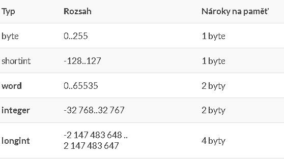
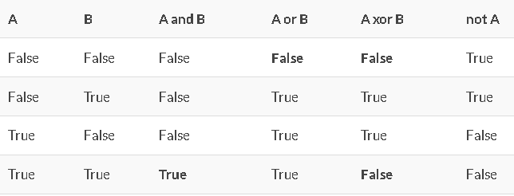

Struktura Programu v Pascalu
Program se v Pascalu člení na tyto části: hlavičku, blok (definice s deklaracemi a tělo-příkazová část).
Hlavičkanám určuje o jaký typ programu jde. Obsahuje název programu.
Vypadá takto: program název( ) <= závorky slouží k přesměrování vstupu a výstupu
Blok
Definice a deklaraceslouží k nadefinování všeho, co náš program bude potřebovat. Volíme výstižné názvy. Můžeme tedy deklarovat:
Deklarace návěští.
Definice konstant – začíná CONST a přiřadíme hodnotu proměnné PŘ. CONST n=10
Deklarace proměnných – začína VAR seznam proměnných:typ;
Deklrace procedur a funcí.
Tělo (příkazová část)obsahuje příkazy, které se vykonají.
Begin
SpustVse;
End.
STRUKTURA TEDY VYPADÁ TAKTO
Hlavička programu;blok <= tvoří
Program název( );
Deklarace návěští
Definice konstant
Definice typu
Deklarace proměnných (var seznam proděných:typ;)
Deklarace procedur a funcí
Základní typy dat
CELOČÍSELNÉ TYPY DAT

Operace s typem INTEGER
+
–
*
DIV (celočíselné dělení)
MOD (zbytek po dělení)
ABS (absolutní hodnota)
SQR (druhá mocnina)
ODD (lichost)
SUCC (následovník)
PRED (předchůdce)
RELAČNÍ OPERÁTORY (slouží k porovnávání)
TYP REAL
Hodnota – 2.9*10-39 až 1.7*1038
Operace s typem REAL
ABS (absolutní hodnota)
SQR (druhá mocnina)
ROUND (zaokrouhlení)
TRUNS (zůstanou jen celá čísla)
SIN (sinus)
LIN (logaritmus)
EXP (exponent)
RELAČNÍ OPERÁTORY (slouží k porovnávání)
TYP BOOLEAN
dosahuje 2 hodnot – true, false
OPERACE S TYPEM BOOLEAN (tzv. logické operace)
AND (současně)
OR (nebo)
XOR (buď a nebo)
NOT (opak)

TYP CHAR
Obsahuje 1 znak (písmeno, číslice, speciální znaky, funkční klávesy)
Dá se do něj vložit funkčnost funkčních tlačítek
OPERACE S TYPEM CHAR
PRED (předcházející prvek)
SUCC (následující prvek)
ORD (číslo v ASCII tabulce)
CHR (číslo a ASCII tabulce <= když zadáme číslo, vyjede znak)
TYP STRING
délka v paměti je 256 znaků
v závorkách se píše rozsah [1..255]
je to řetězec – skupina znaků
Výhody – může obsahovat jakékoliv znaky, rychlá manipulace, snadné zjištění délky
Nevýhody – velká nárok na paměť, maximální počet 255 znaků
PŘÍKAZY VSTUPU A VÝSTUPU
V Pascalu:
read, readln (seznam proměných)
write, writeln (seznam proměných nebo text v apostrofech)
V Deplhi:
Ke vstupu slouží
– EDIT (jednořádkový vstup)
– MEMO (víceřádkový stup)
– LISTBOX (vstup ze seznamu)
K výstupu slouží
LABEL
MEMO
EDIT (např. ve formulářích)
PŘIŘAZOVACÍ PŘÍKAZ
Přiřazovací příkaz realizuje přiřazení hodnoty proměnné nebo definici výstupní hodnoty funkce v jejím těle
Hodnota je získána vyhodnocením výrazu. Typ výrazu musí být kompatibilní vzhledem k přiřazení s typem proměnné (funkce).
Proměnná:=výraz (výpočet, hodnota);